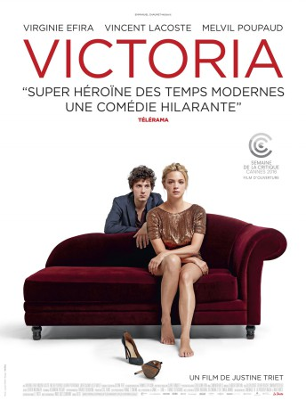

#7205 Victoria - Männer & andere Missgeschicke
 
 IMDB-Wertung: 6.4 / 10
IMDB-Wertung: 6.4 / 10  Metascore: 0
Metascore: 0 
Victoria is a thirty-something divorced lawyer who's struggling to raise her two daughters. She is canny and cynical but on the verge of an emotional breakdown. At a friend's wedding she reconnects with Vincent, an old friend, and Sam, an old client. Her life is about to take a new turn.
Jahr: 2016
Dauer: 96 Minuten
FSK: 12
Land: Frankreich Studio: Alamode FilmTonspuren:
Untertitel: Deutsch,
Auflösung: 1080p (1920x808) Größe: 6215 MB
Genre: Drama, Komödie, Liebe
Regisseur: Justine Triet
Drehbuch: Thomas Lévy-Lasne
Soundtrack:
Darsteller:
 Virginie Efira als Victoria Spick
Virginie Efira als Victoria Spick Vincent Lacoste als Samuel Mallet
Vincent Lacoste als Samuel Mallet- Melvil Poupaud als Vincent Kossarski
- Claire Burger als Leslie Chevalier
- Sabrina Seyvecou als Suzanna
- Romain Charbon als Fred
- Emmanuelle Lanfray als Une avocate , uncredited
- Laurent Poitrenaux als David
- Laure Calamy als Christelle, l'avocate de Victoria
- Alice Daquet als Eve
- Julie Moulier als La juge
- Elsa Wolliaston als La voyante
- Sophie Fillières als Sophie
- Liv Harari als Liv
- Jeane Arra-Bellanger als Jeanne
- Hector Obalk als Le Président du Tribunal de Paris
- Anthony Paliotti als Le Président du conseil de discipline
- Pierre Maillet als Le psy
- Aurélien Bellanger als Voisin de table mariage
- Arthur Harari als Le dresseur chimpanzé
- Vincent Dietschy als L'acupuncteur
- Thomas Lévy-Lasne als Axel
- No��mie Veissier als Cliente Victoria
- Denis Eyriey als Coup d'un soir 1
- Marc Ruchmann als Coup d'un soir 2
- Philip Vormwald als Coup d'un soir 3
- Nicolas Anthomé als Le médecin
- Etienne Beurier als Le flic
- Antoine Bueno als L'expert vétérinaire
- Georges Sauveur als Maître Mazzeti
- Vincent Sornaga als Le caméraman
- Marc-Antoine Vaugeois als Leader blogeurs
- Pierre Maillard als Leader blogeurs
- Vera Cupic-Vojnovic als La baby-sitter
- Sarah Lancman als Doublure piano
Datei: X:\2016(N-Z)\Victoria - Männer & andere Missgeschicke (2016, FSK12, 1920x808).mkv seit 09.10.2017
Festplatte: HD 2016(A-Z)
 Es gibt insgesamt 182 Filme in der Gruppe '2016(N-Z)'
Es gibt insgesamt 182 Filme in der Gruppe '2016(N-Z)'